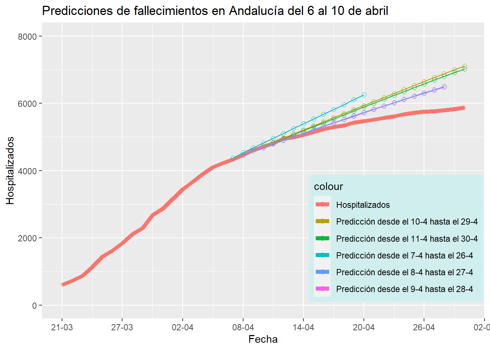

Aquí se presentan los datos de hospitalizados en las Unidades de Cuidados Intensivos de la comunidad autónoma de Andalucía.
En este gráfico a continuación se presentan los datos de hospitalizados en la UCI a día de hoy en Andalucía. En el eje de las coordenadas podemos ver el número de días que han pasado desde que se comenzó el registro (21 de marzo). Estos datos se actualizan cada mañana a partir de los datos publicados por el Gobierno.
Estos son los mismos datos del principio pero un poco mejores visualmente, con el inconveniente de que no se actualizan cada dia a las 11:30 de la mañana y requieren una transposición a excel.

| Fecha | 6 Abril | 7 Abril | 8 Abril | 9 Abril | 10 Abril |
|---|---|---|---|---|---|
| 2020-04-07 | 0.00869 | ||||
| 2020-04-08 | 0.01588 | 0.00022 | |||
| 2020-04-09 | 0.01626 | 0.00415 | 0.00481 | ||
| 2020-04-10 | 0.02138 | 0.00576 | 0.00683 | 0.00127 | |
| 2020-04-11 | 0.03065 | 0.00271 | 0.00397 | 0.00641 | 0.00435 |
| 2020-04-12 | 0.02941 | 0.00979 | 0.01124 | 0.00242 | 0.00040 |
| 2020-04-13 | 0.04889 | 0.00300 | 0.00140 | 0.01809 | 0.01441 |
| 2020-04-14 | 0.06269 | 0.01173 | 0.00980 | 0.02938 | 0.02508 |
| 2020-04-15 | 0.07010 | 0.01380 | 0.01171 | 0.03433 | 0.02923 |
| 2020-04-16 | 0.07961 | 0.01822 | 0.01600 | 0.04145 | 0.03579 |
| 2020-04-17 | 0.08985 | 0.02359 | 0.02125 | 0.04952 | 0.04334 |
| 2020-04-18 | 0.10431 | 0.03400 | 0.03155 | 0.06232 | 0.05553 |
| 2020-04-19 | 0.11155 | 0.03659 | 0.03419 | 0.06756 | 0.06029 |
| 2020-04-20 | 0.12390 | 0.04502 | 0.04251 | 0.07831 | 0.07064 |
| Fecha | 11 Abril | 12 Abril | 13 Abril | 14 Abril | 15 Abril |
|---|---|---|---|---|---|
| 2020-04-12 | 0.00774 | ||||
| 2020-04-13 | 0.00518 | 0.01363 | |||
| 2020-04-14 | 0.01328 | 0.02489 | 0.00569 | ||
| 2020-04-15 | 0.01474 | 0.03197 | 0.01132 | 0.00214 | |
| 2020-04-16 | 0.01878 | 0.04075 | 0.02082 | 0.00500 | 0.00173 |
| 2020-04-17 | 0.02395 | 0.05088 | 0.03122 | 0.00665 | 0.00246 |
| 2020-04-18 | 0.03400 | 0.06364 | 0.04636 | 0.00282 | 0.00261 |
| 2020-04-19 | 0.03659 | 0.07203 | 0.05387 | 0.00668 | 0.00018 |
| 2020-04-20 | 0.04485 | 0.08432 | 0.06688 | 0.00422 | 0.00382 |
| Fecha | 16 Abril | 17 Abril | 18 Abril | 19 Abril | 20 Abril |
|---|---|---|---|---|---|
| 2020-04-17 | 0.00019 | ||||
| 2020-04-18 | 0.00614 | 0.00540 | |||
| 2020-04-19 | 0.00459 | 0.00386 | 0.00519 | ||
| 2020-04-20 | 0.00724 | 0.00833 | 0.02016 | 0.01163 | |
| 2020-04-21 | 0.00286 | 0.00411 | 0.01979 | 0.00880 | 0.00108 |
| 2020-04-22 | 0.00018 | 0.00159 | 0.02087 | 0.00638 | 0.00196 |
| 2020-04-23 | 0.00574 | 0.00418 | 0.01872 | 0.00070 | 0.00478 |
| 2020-04-24 | 0.01288 | 0.01118 | 0.01519 | 0.00623 | 0.00439 |
| 2020-04-25 | 0.02171 | 0.01988 | 0.00963 | 0.01486 | 0.00244 |
| 2020-04-26 | 0.02949 | 0.02754 | 0.00521 | 0.02245 | 0.00121 |
| 2020-04-27 | 0.03460 | 0.03252 | 0.00344 | 0.02736 | 0.00413 |
| 2020-04-28 | 0.03910 | 0.03690 | 0.00205 | 0.03166 | 0.00444 |
| Fecha | 21 Abril | 22 Abril | 23 Abril | 24 Abril |
|---|---|---|---|---|
| 2020-04-21 | 0.00036 | |||
| 2020-04-22 | 0.00283 | 0.00247 | ||
| 2020-04-23 | 0.00158 | 0.00333 | 0.00419 | |
| 2020-04-24 | 0.00087 | 0.00417 | 0.00536 | 0.00017 |
| 2020-04-25 | 0.00518 | 0.00517 | 0.00719 | 0.00034 |
| 2020-04-26 | 0.00873 | 0.00581 | 0.00865 | 0.00017 |
| 2020-04-27 | 0.00968 | 0.00661 | 0.01025 | 0.00000 |
| 2020-04-28 | 0.00995 | 0.00740 | 0.01199 | 0.00034 |
Estos datos tratan hospitalizados en las Unidades de Cuidados Intensivos acumulados, no se registran las bajas, por lo que conforme avanzan las semanas y va disminuyendo el efecto de la enfermedad estos datos tenderán a una linea horizontal, que supondrá el fin de los fallecidos.
En los gráficos separados por tramos de dias se puede observar que la curva se va aplanando y que las predicciones van convergiendo hacia esa horizontalidad mencionada.